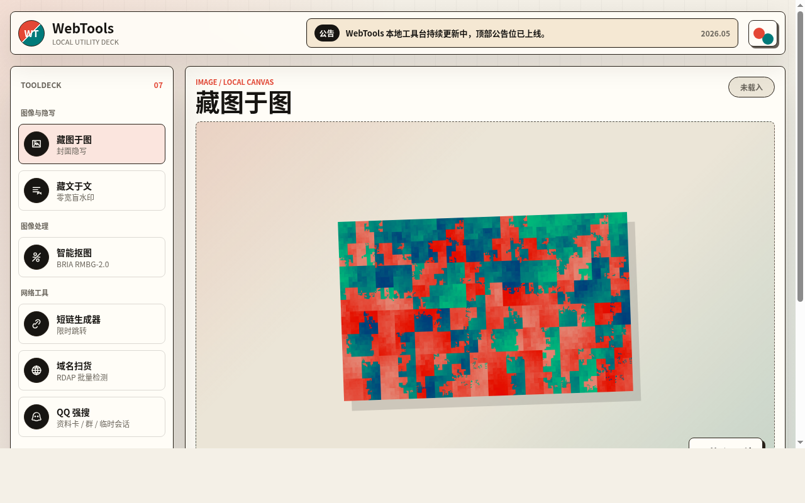
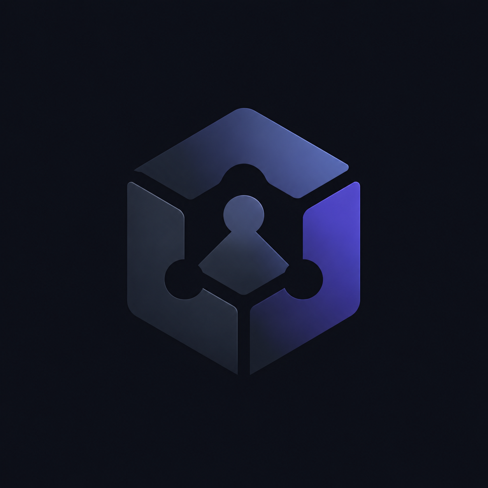

F0
从零开始，把可用的系统交付到真实入口。
本地优先工具
AI 模型网关
浏览器游戏
开源仓库
长期维护
项目展示
已经推出的项目，先放到台前。
这里集中展示 Force Zero 已经上线的网页工具、AI 网关和浏览器游戏。每个项目都保留真实入口和代码来源。
我们怎么做
速度要够快，结构也要留得住。
真实入口
项目先能打开、能完成核心动作，再继续打磨界面、性能和维护方式。
AI 接入
模型、接口和自动化能力要被整理成稳定入口，而不是停留在一次性 Demo。
可替换内容
作品集、截图、链接和说明保持低成本维护，方便后续持续替换真实项目。
开始聊聊
有新的工具想法，或者想一起把现有项目继续做实？
把项目线索、仓库链接或上线目标发过来。Force Zero 更适合从一个可运行的入口开始，把它磨成可以长期展示的作品。
GitHub / JTropy